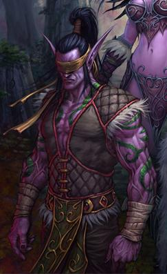

Иллидан Ярость Бури - был самопровозглашенным Владыкой Запределья, правившим из Черного Храма. Он родился ночным эльфом, и, как сказала Майев Песнь Теней, стал «ни демоном, ни ночным эльфом, а чем-то б́ольшим». Он приходился братом-близнецом Малфуриона Ярость Бури и был влюблен в Тиранду Шелест Ветра. Иллидан был необычайно одаренным чародеем, мощь которого стало трудно классифицировать, после молниеносного её роста от становления охотником на демонов и поглощения сил от черепа Гул'дана.
Его стремление к власти и мастерству в тайной магии, привели его к совершению ряда ужасных преступлений против собственного народа и других рас Азерота, включая его союз с Саргерасом во время Войны Древних и создание второго Источника Вечности. За свои действия Иллидан был заключен под стражу на десять тысяч лет, до самого освобождения во время Третьей Войны. Его стали величать Владыкой Запределья, а за свершённые преступления против ночных эльфов — Предателем. В стремлении уничтожить давнего заключенного, Майев, при помощи Акамы, вторглась в Черный храм, где загнала Иллидана в угол и свергла его, положив конец одной из самых трагических историй Азерота.
Биография
Война Древних

Иллидан во время Войны Древних, 10.000 лет назад.Иллидан, брат-близнец Малфуриона, практиковал магию высокорожденных. В молодости он пытался постигнуть магию друидов, как и его брат, но чародейство привлекало его больше, чем магия земли. В отличии от своего брата, Иллидан родился с глазами янтарного цвета, которые в то время означали великое предназначение, но сейчас это означает наличие друидического потенциала. Когда Малфурион и Тиранда нашли своё предназначение, Иллидан всё ещё был в поисках. Хоть он и не был высокорожденным, он стал личным волшебником военного лидера Гребня Ворона.
Когда вторжение Саргераса в Азерот началось, а о вероломстве Азшары стало известно всем, Малфурион убедил Иллидана оставить свою королеву. Иллидан послушал своего брата. Но когда Кенарий и драконы вступили в битву, Малфурион понял, что соперник слишком силен, чтобы победить его в сражении. Он полагал, что остановить вторжение можно разрушив Источник Вечности. Эта идея потрясла Иллидана, так как это был источник его магии, и, скорее всего, эльфийского бессмертия, поэтому его потеря — слишком большая цена для него. Кроме того, ночной эльф обнаружил, что его привлекают силы Пылающего Легиона, в которых он, за хаотическим поведением, увидел настоящую магическую чистоту. Сатир Ксавий увидел это и использовал его замешательство чтобы «посадить» семя сомнения в разум Иллидана, заставившее эльфа воспользоваться мощью Пылающего легиона чтобы стать сильнее, в то время как сам Иллидан полагал, что помогает победить Легион. Это и привело к тому, что он отдал Душу Демона Саргерасу для усиления портала.
У Иллидана были сильные чувства к Тиранде Шелест Ветра, начинающей жрице Сестёр Элуны. Ночной эльф так желал впечатлить Тиранду, что часто действовал не подумав, особенно когда дело касалось магии; он так и не понял, что это совсем не то, что Тиранда хотела видеть в своем будущем супруге. Но пока Иллидан сражался за её сердце, никто из них ещё не знал, что эта битва закончилась сразу после её начала, так как почти сразу Тиранда выбрала Малфуриона, а не Иллидана. Ксавий знал об этом и использовал свою силу чтобы натравить Иллидана на Малфуриона, убеждая его в том, что если Малфурион погибнет, то Иллидану больше не придётся соперничать с ним за любовь Тиранды. Наконец, увидев возлюбленную в объятиях брата, он окончательно разорвал все связи с защитниками.
Иллидан, вынашивая в голове новый план, отправился в Зин-Азшари. Там он фальшиво присягнул на верность Азшаре и Маннороту. План Иллидана состоял в получении души демона — артефакта великой силы, который был создан Смертокрылом, так же известным как Нелтарион Хранитель Земли. Данный артефакт обладал возможностью закрыть портал, через который демоны приходили в Калимдор. Чтобы этот замысел сработал, Иллидану потребовалось больше сил. В конечном счёте он предстал перед Саргерасом, который быстро раскусил план ночного эльфа по получению души демона для Легиона. Титан был доволен этим планом и дал Иллидану «подарок» в обмен на его верность. Его глаза были выжжены самим Саргерасом, который всё ещё находился по ту сторону портала, а вместо них появились огоньки, дающие возможность видеть любой вид магии, а на тело были нанесены татуировки для усиления эффекта тайной магии. Азшара была очарована «новым» Иллиданом (которого очень волновало её мнение), но осталась осторожной, послав капитана Варо'тена для помощи ночному эльфу в поисках души демона.
Legion
Победив Иллидана в Чёрном храме, Стражи забрали его безжизненное тело в секретную тюрьму в Азсуне, что на Расколотых островах, чтобы навечно его там похоронить. Даже после смерти оно может быть использовано в интересах Легиона. Однако Кордана Осквернённая Песнь, одна из Стражей, впустила Гул'дана и Пылающий Легион из альтернативного Дренора в Казематы. Несмотря на то, что Майев Песнь Теней освободила заключённых в темнице охотников на демонов, последователей Иллидана, Кордане и Гул'дану удалось сбежать с телом. После чернокнижник провёл ритуал отделения души бывшего владыки Запределья от тела в Крепости Чёрной Ладьи. При этом душа Иллидана отправилась в Круговерть Пустоты.
Одна из первых наару, Зе'ра, верит, что Иллидан это дитя Света и Тьмы, которое положит конец эпохе демонов. Она всеми силами старается вернуть душу охотника на демонов в его тело и просит о помощи героя Азерота.
Смерть
В конце, когда Иллидан близок к своей смерти, Майев радуется, что он наконец-то повержен, но перед своей смертью Иллидан говорит ей, что охотница ничто без охоты. Так только жажда мести была удовлетворена, Майев констатирует, что теперь она действительно ничто. Акама снова стал хозяином Чёрного храма и поклялся наполнить его коридоры светом, как это было когда-то